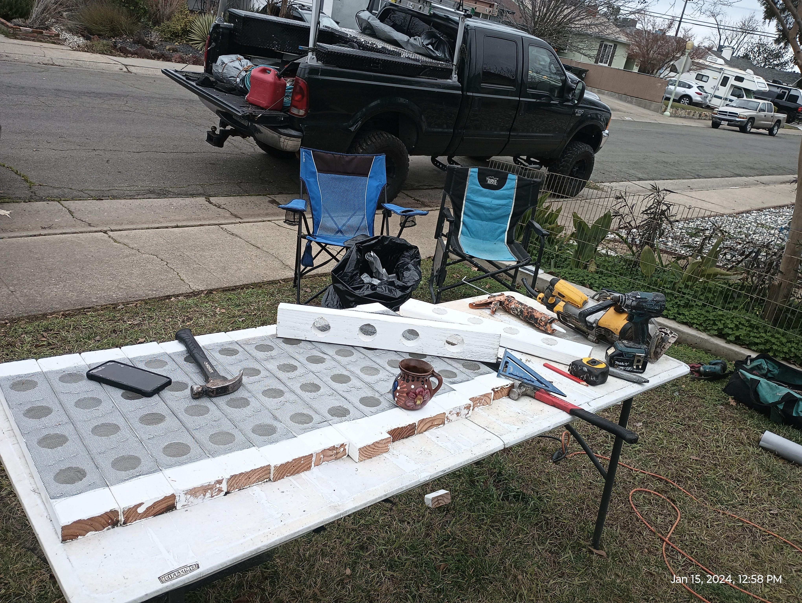
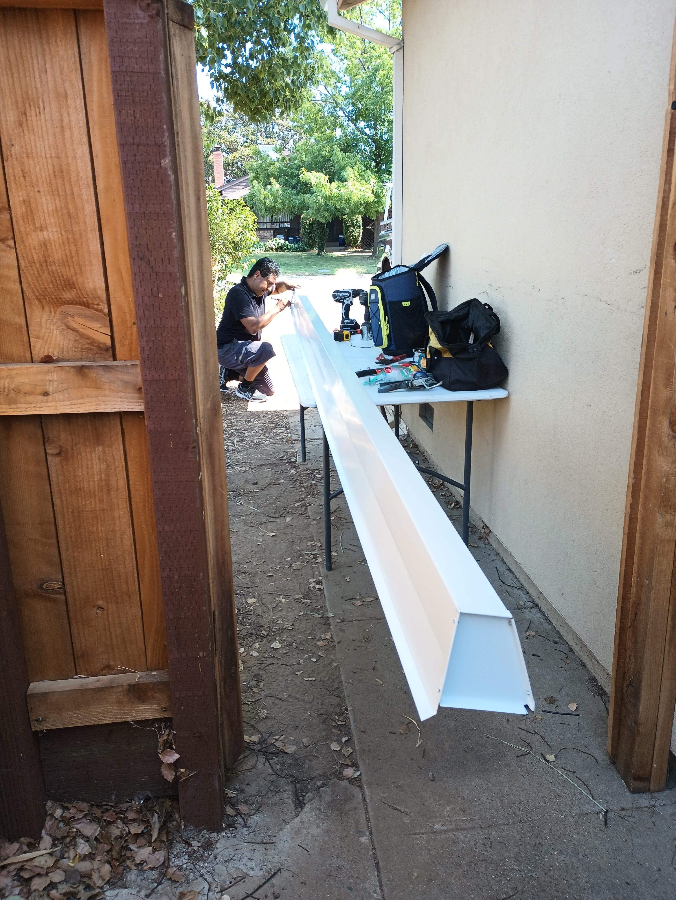

Clear repair CTA for leak/storm/search intent.
Family roofing business · roof + gutter installs · Sacramento area
A roofing preview that keeps the storm/safety identity and makes estimates easy.
Next Generation already has personality, project photos, roof/gutter positioning, and a clear mission. This preview turns that into a modern, quote-first roofing page without losing the family-business feel.
This is a controlled prospect preview. Final publication should use owner-approved photos, reviews, exact service area, and preferred lead workflow.
Public-source proof
What this preview uses from the real business.
Only visible/public signals are used here. No fake testimonials, no fake project photos, no invented claims.
ProofCurrent site tagline: “Quality work that will beat the storm.”
ProofPublic source includes real roof/gutter project photos.
ProofFamily-business identity is already strong.
ProofPhone, email, and service positioning are visible publicly.
Services
High-intent sections customers can scan fast.
Each service becomes a reason to call or request an estimate, instead of a generic list.
High-ticket estimate flow with photo-based intake.
Related service shown as add-on without diluting roofing.
Pain points → YellowMarket products
The business leaks this preview is designed to fix.
This is the sales bridge: every visible weakness maps to a product YellowMarket can deliver.
Preserve storm/safety message in a modern layout
Photo proof beside estimate CTA
Instant estimate intake + callback workflow
Service area + roofing keywords structured on page
Current impression
- Useful trust signals exist, but the customer journey is not controlled enough.
- Visitors need faster proof, clearer services, and fewer reasons to hesitate.
- Lead capture depends too much on passive call/email behavior.
Preview impression
- Proof, services, and contact path are visible in the first scroll.
- The page makes the next action obvious: call, email, or request an estimate.
- YellowMarket products are tied directly to revenue leaks.
Visual proof
Source visuals stay inside the preview.
The preview remains visual. Screenshots/photos are proof anchors, not decoration.



Call-ready preview
Ready to show as a consistent YellowMarket preview.
Same structure as the other prospects, customized with real source signals and the specific leaks YellowMarket can fix.